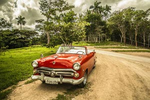
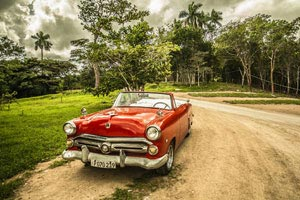

卢浮宫是法国的艺术殿堂，这里有许多世界名画，如：《蒙娜丽莎》、《最后的晚餐》这类世界名画。除了作品栩栩如生，让人叹为观止。而后我们去了埃菲尔铁塔和巴黎圣母院，法国文豪雨果就写了世界名著《巴黎圣母院》。离开巴黎后，我们去了此次欧洲之行的倒数第二站--比利时布鲁塞尔，一提到布鲁塞尔，大家定会想到小于连，这个“撒尿小孩”是布鲁塞尔的标志，一看到他就知道到了比利时。 布鲁塞尔给我的印象不多，除了小于连外就只有原子球塔了。原子球塔在建国百年纪念公园，它是一个铁分子建筑。

走过了瑞典的魅力，接下来我们就走进处处都充满了浪漫色彩的法国吧，法国的景色影响力可是我们心里都知道的，法国的浪漫气息便遍布在法国的大大小小的每一个街道，法国是美丽的，法国是神奇的，法国也是浪漫的，来到法国观看这里的美丽景色，这里的巴黎圣母院可是最著名的大教堂了，巴黎圣母院的规格和建筑风格都是数一数二的壮观，而且这一个建筑也是法国的代表想性的优美建筑了，走进了巴黎圣母院，这里的强烈的文化气息围绕在你的左右，是那么的神奇。 欧洲旅游最佳路线，领会最美欧洲！

我原以为只有法国的巴黎才是最美的地方，可没想到就连欧洲的乡村小镇也是别有一番风味哦!在旅行的途中，我观察着外面的风景，青山绿水，典型的欧式小别墅，远远的牧场上，大风车在那儿随风转动，还有奶牛，野马，小猪，有的在那儿散步，有的在那儿香喷喷地吃着嫩草悠闲极了。其实，在欧洲呢，四季是非常分明的。冬天，到处都是白色的；在秋天，整个大地就是一片金色的世界了；在春天，大地就是万紫千红的，整个一片花的海洋；而在夏天呢，远远望去当然一片绿色了。

 

夏威夷是大多数人心中的旅游圣地，去夏威夷旅游感受它的温暖与浪漫。
白天的夏威夷给我一种欢快的感觉。在这里的任何地方都可以听到快乐的欢声笑语，情侣之间的嬉笑声，有孩童发出的天真纯洁的笑语，有冲浪爱好者发出的尖叫畅快声.
当我们从住处希尔顿酒店出来，穿过一条街，就到这边的沙滩。那时候大约是上午九点左右，这个时候的游客都已经出来到沙滩上享受“日光浴”享受清凉的海水的冲击休闲的生活很是舒服。我们过来的时候，沙滩上已经是人满为患，到处都是穿着性感的比基尼的美女，和穿着大裤衩或泳裤的男士。在这里也许能看到电视上才能出现的好莱坞巨星，也不乏身材堪比好莱坞巨星的美女，总之在这里能看到世界各地的旅游爱好者。
在沙滩上已经支起了很多小小的遮阳伞，在这样伞下一些方便的桌子折叠椅正整齐齐的放着，有的人已经舒服的躺在椅子上吹海风，嘴里喝着鲜甜的椰树汁，有的干脆睡在铺在遮阳伞下的布匹上，感受沙滩的酥软和海风迟来的双重感受，每个人都有自己的享受方式。 我在沙滩上慢慢的走着，不时的有轻微的浪花扑打过来，轻轻的打在我的小腿肚上，如点击班的感受霎时传遍我的全身，凉凉的，酥酥的，那种感觉很舒爽。就这样慢慢的围绕着沙滩走着，看着远处的冲浪爱好者，在波浪上奋勇驰骋，与波浪战斗，挑战人身体的极限，用华丽的技巧吸引了很多的来往的游客，可惜的是，一个巨大的浪花从他的身后掀起铺了过去，随即把他死死地拍在了浪花脚下，更高效的是，有一个浪花把他淹入水里的身体冲上了沙滩，这届脱离的海水的拥抱。这一幕看的很多游客都乐的合不拢嘴，我也咧嘴大笑„„ 夜晚的夏威夷充满庄严的气氛，这个时候天地造就出一种撩人心弦的浪漫气息深深地吸引着人们的神经。漫天的星光从夜空中倾泄下来，照亮了大半的沙滩，有很多在黑暗处亲密接吻的情侣，直接被月光照的雪亮雪亮。我们身临其境，感受着这时候月光的美丽，感受着轻轻地海风吹拂在脸上，神游天外，想象着自己和爱人从开始走到现在的点点滴滴，这时候感觉生活其实无限的美好。
在夏威夷旅游感受的几日，我们呼吸那里干净清新的空气，享受那里的威风吹拂，那里的各种欢声笑语在耳边久久回荡着„„点击查询夏威夷旅游报价。
把战争遗迹作为夏威夷之旅的收官之地，似乎不是十分完美，但，这也更加让我们庆幸 —— 生在和平年代里，长在祖国庇护中。 愿你我踏上他国领土时，不为掠夺、不为侵略，愿每个人都被温柔相待，愿世界和平……